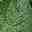
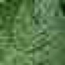
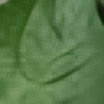
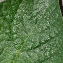

Patch loader
Pairs LR/HR files by filename, samples aligned patches, and applies flips/rotations.
PyTorch / Computer Vision / Super-Resolution
LeafSR packages a Kaggle-style notebook into a reproducible ML system: paired image loading, ESRGAN-lite training, validation metrics, inference scripts, and a visual project frontend.
Dataset Explorer
The frontend commits only a few lightweight sample images. The full dataset, VGG weights, checkpoints, and submissions stay out of git.




System Design
Pairs LR/HR files by filename, samples aligned patches, and applies flips/rotations.
Uses RRDB blocks and pixel shuffle upsampling to predict a residual over bicubic HR.
Combines Charbonnier, residual, VGG perceptual, FFT, and low-weight adversarial losses.
Runs EMA checkpoints with 8-way test-time augmentation for submission generation.
Architecture
Measured Result
The trained checkpoint used a Tesla T4 with automatic mixed precision, cosine scheduling, early stopping, EMA-smoothed generator weights, and 8-way test-time augmentation.